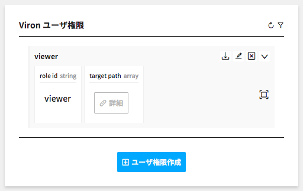
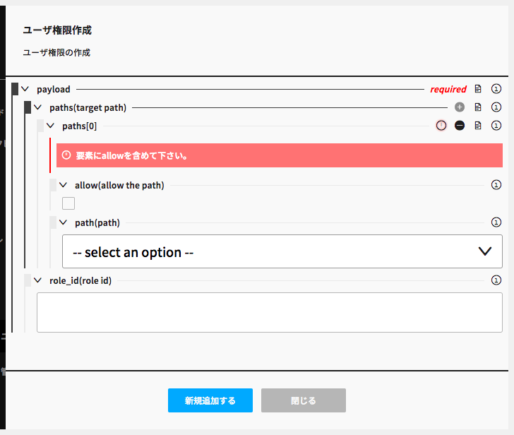

ユーザ権限を管理する
Vironユーザに割り当てる権限を追加/変更/削除します。
Vironのユーザ権限はリソース毎に参照/追加/変更/削除を設定することが可能です。
ユーザ権限を追加する
Step1 - Viron ユーザ権限 コンポーネントを開く
左カラムのViron ユーザ権限ボタンをクリックしてコンポーネントを開きます。
Step2 - ユーザ権限作成 モーダルを開く

コンポーネント下部のユーザ権限作成をクリックしてモーダルを開きます。
Step3 - ユーザ権限を作成する

必要な情報を入力してユーザ権限を作成します。
- paths.path
- 対象の操作をセレクトボックスから選択します。
- paths.allow
- 選択した操作を許可する場合はチェックします。
- role_id
- ユーザ権限のIDです。ユーザへはこのIDを付与します。